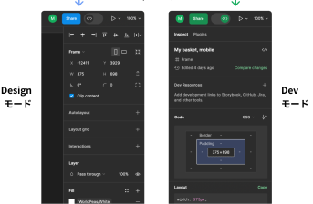

Devモードは、開発者のために特別に設計された、Figmaファイルを操作する方法です。私たちは、デザインのハンドオフにおける摩擦を減らし、より良いコミュニケーションとデザインの実装を可能にする方法として、このモードを作成しました。
このモードは、開発者モードと呼ばれていますが、デザイナーにとっても重要です。Devモードは、デザイナーが開発者が閲覧できるようにファイルを準備したときに、最も効果的に機能します。もしあなたがデザイナーなら、このファイルを通して
"Details for Designers "バッジを探してください。これらのヒントは、スムーズなハンドオフを実現するために、どの部分に焦点を当てるべきかを理解するのに役立ちます！
